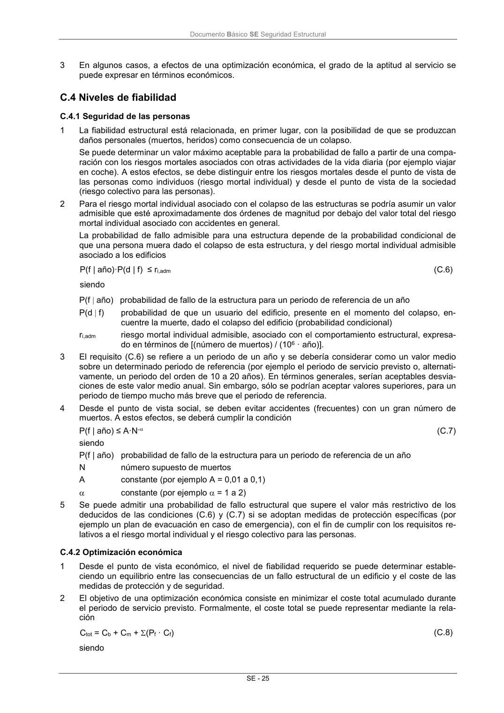

DB-SE · C.4 Niveles de fiabilidad · versión 2019-12-20 · capa oficial
Formatos: JSON compacto · Markdown · PDF fuente
Ámbito del documento · texto del ámbito · documento y tablas
ID técnico a0065 · PDF pág. 31-32 · jerarquía no validada por persona · contrastado con el literal de la página 31 (candidato tipográfico); no validado por persona · padre: raíz
C.4 Niveles de fiabilidad C.4.1 Seguridad de las personas 1 La fiabilidad estructural está relacionada, en primer lugar, con la posibilidad de que se produzcan daños personales (muertos, heridos) como consecuencia de un colapso. Se puede determinar un valor máximo aceptable para la probabilidad de fallo a partir de una compa- ración con los riesgos mortales asociados con otras actividades de la vida diaria (por ejemplo viajar en coche). A estos efectos, se debe distinguir entre los riesgos mortales desde el punto de vista de las personas como individuos (riesgo mortal individual) y desde el punto de vista de la sociedad (riesgo colectivo para las personas). 2 Para el riesgo mortal individual asociado con el colapso de las estructuras se podría asumir un valor admisible que esté aproximadamente dos órdenes de magnitud por debajo del valor total del riesgo mortal individual asociado con accidentes en general. La probabilidad de fallo admisible para una estructura depende de la probabilidad condicional de que una persona muera dado el colapso de esta estructura, y del riesgo mortal individual admisible asociado a los edificios P(f | año)·P(d | f) ≤ ri,adm (C.6) siendo P(f año) probabilidad de fallo de la estructura para un periodo de referencia de un año P(d f) probabilidad de que un usuario del edificio, presente en el momento del colapso, en- cuentre la muerte, dado el colapso del edificio (probabilidad condicional) ri,adm riesgo mortal individual admisible, asociado con el comportamiento estructural, expresa- do en términos de [(número de muertos) / (106 · año)]. 3 El requisito (C.6) se refiere a un periodo de un año y se debería considerar como un valor medio sobre un determinado periodo de referencia (por ejemplo el periodo de servicio previsto o, alternati- vamente, un periodo del orden de 10 a 20 años). En términos generales, serían aceptables desvia- ciones de este valor medio anual. Sin embargo, sólo se podrían aceptar valores superiores, para un periodo de tiempo mucho más breve que el periodo de referencia. 4 Desde el punto de vista social, se deben evitar accidentes (frecuentes) con un gran número de muertos. A estos efectos, se deberá cumplir la condición P(f | año) ≤ A·N- (C.7) siendo P(f | año) probabilidad de fallo de la estructura para un periodo de referencia de un año N número supuesto de muertos A constante (por ejemplo A = 0,01 a 0,1) constante (por ejemplo = 1 a 2) 5 Se puede admitir una probabilidad de fallo estructural que supere el valor más restrictivo de los deducidos de las condiciones (C.6) y (C.7) si se adoptan medidas de protección específicas (por ejemplo un plan de evacuación en caso de emergencia), con el fin de cumplir con los requisitos re- lativos a el riesgo mortal individual y el riesgo colectivo para las personas. C.4.2 Optimización económica 1 Desde el punto de vista económico, el nivel de fiabilidad requerido se puede determinar estable- ciendo un equilibrio entre las consecuencias de un fallo estructural de un edificio y el coste de las medidas de protección y de seguridad. 2 El objetivo de una optimización económica consiste en minimizar el coste total acumulado durante el periodo de servicio previsto. Formalmente, el coste total se puede representar mediante la rela- ción Ctot = Cb + Cm + (Pf · Cf) (C.8) siendo Documento Básico SE Seguridad Estructural SE - 26 Ctot coste total Cb coste del proyecto y de la ejecución Cm coste previsto para la inspección, al mantenimiento y la demolición Cf coste del fallo Pf probabilidad de fallo La suma (Pf · Cf) se debe establecer para todas las situaciones de riesgo independientes y todos los posibles mecanismos de fallo. Esta representación del coste total tiene un alto grado de simplificación y se debe detallar más a efectos de su aplicación práctica. 3 En los casos en los que el fallo (colapso) estructural pueda afectar a las personas (caso normal), además de los criterios económicos, la estructura deberá cumplir con los requisitos relacionados con la fiabilidad mínima. En estos casos, la optimización condicional se puede llevar a cabo para la relación (C.8), siempre y cuando se cumpla con los requisitos deducidos de (C.6) y (C.7). 4 En algunos casos, el coste del riesgo ((Pf · Cf)) puede estar cubierto por un seguro. C.4.3 Valores numéricos 1 Los valores numéricos relativos a la fiabilidad de una estructura se expresan a menudo en términos del índice de fiabilidad, β, relacionado con la probabilidad de fallo, Pf, a través de

PDF fuente redistribuible: copia fiel enlazada en esta página (SHA256 verificado).